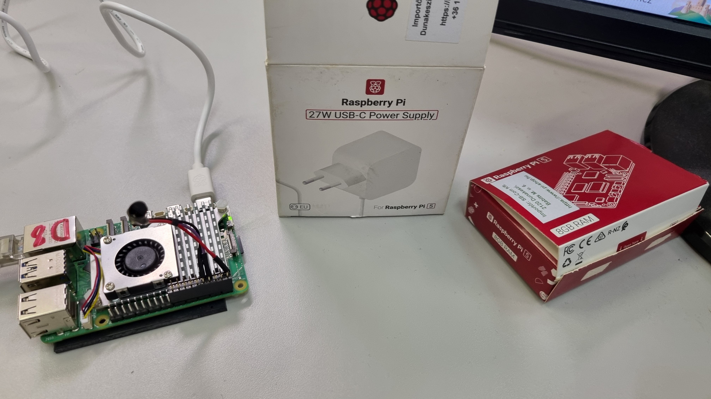
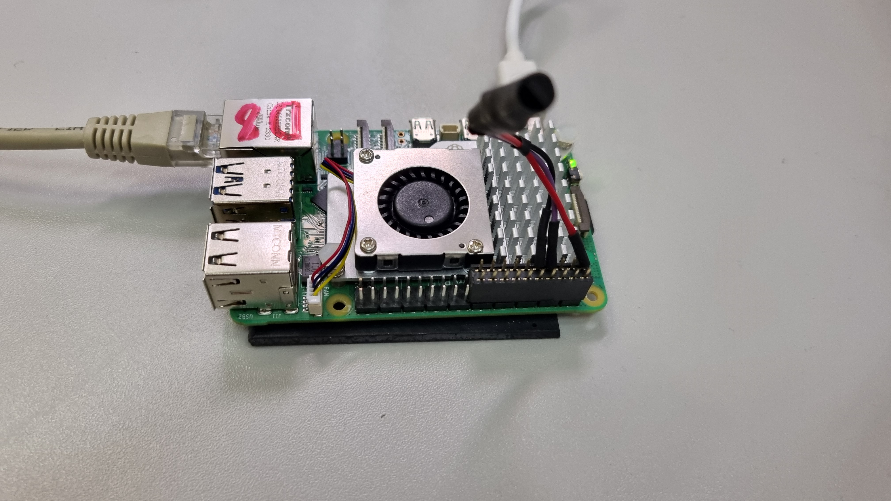

A rendszerüzemeltetés és az IoT tantárgyban tanultam meg, hogyan lehet szoftveres logikával fizikai eszközöket irányítani.
Virtualizációnál az Oracle VirtualBoxot használtunk, ahol megtanultam virtuális gépeket létrehozni és kezelni. Ez azért volt jó, mert így biztonságosan kísérletezhettem különböző beállításokkal. A Linux alapjait virtuális gépeken futtatott rendszereken tanultuk meg, ahol a terminál használatával és a fájlrendszer felépítésével ismerkedtünk meg. Itt tanultam meg a terminál használatát és azokat az alapvető parancsokat, amikkel magabiztosan tudok mozogni a fájlrendszerben vagy elvégezni alapbeállításokat. A Node-RED volt a legérdekesebb rész. Megtanultam a Node-RED vizuális felületén logikai folyamatokat (flow-kat) tervezni. Ezzel dolgoztam fel a szenzoradatokat, és így irányítottam az olyan eszközöket is, mint a képen látható Raspberry Pi.

A projektemben egy olyan hőmérséklet-riasztót építettem, amely szerverszobák vagy hűtőházak védelmére szolgál. A cél az volt, hogy a rendszer ne csak mérje az adatokat, hanem azonnal jelezzen is, ha túlmelegedést észlel.
Hardvere egy Raspberry Pi 5 központi vezérlőegység és egy DS18B20 digitális hőmérsékletszenzor. A szoftveres logikai folyamatokat Node-RED környezetben fejlesztettem ki. A riasztásokat a Telegram Bot segítségével közvetlenül az okostelefonomra kapom meg.
A rendszer működése során 5 másodpercenként kéri le a szenzor adatait, amelyek egy Dashboard grafikonon jelennek meg. Ha a hőmérséklet átlépi a 30°C-os határértéket, a program automatikusan elküldi a riasztást. Beépítettem egy Trigger node-ot is, ami megakadályozza, hogy a telefonomat elárasszák az üzenetek, ha az érték a határ környékén ingadozik.
A tesztelés során minden hibátlanul működött, a szenzor melegítésére a grafikon azonnal reagált, a határértéknél pedig megérkezett a pontos mérési adat a telefonomra. Ez a projekt segített elmélyíteni a tudásomat az IoT rendszerek és az automatizálás területén.
Ebben a tanévben a rendszerüzemeltetés alapjaitól jutottam el egy összetett IoT projekt megvalósításáig. Megtanultam, hogyan építhető fel egy stabil informatikai rendszer a virtuális környezettől kezdve a fizikai eszközök vezérléséig. Oracle VirtualBox segítségével sajátítottam el a virtuális gépek kezelését és a Linux parancssoros használatát. Ma már magabiztosan navigálok a terminálban és végzek el alapvető rendszerbeállításokat. A legnagyobb szakmai kihívást a Raspberry Pi 5 alapú hőmérséklet-riasztó rendszerem megalkotása jelentette. A hardveres bekötés mellett Node-RED környezetben fejlesztettem ki a logikai folyamatokat. Sikerült beépítenem a Telegram Bot-ot is. A stabilitás érdekében Trigger node használatával oldottam meg a spam-védelmet.
Ez az év megtanított arra, hogyan lehet egy valós problémára (például szerverszobák védelme) gyors és hatékony technikai választ adni.
